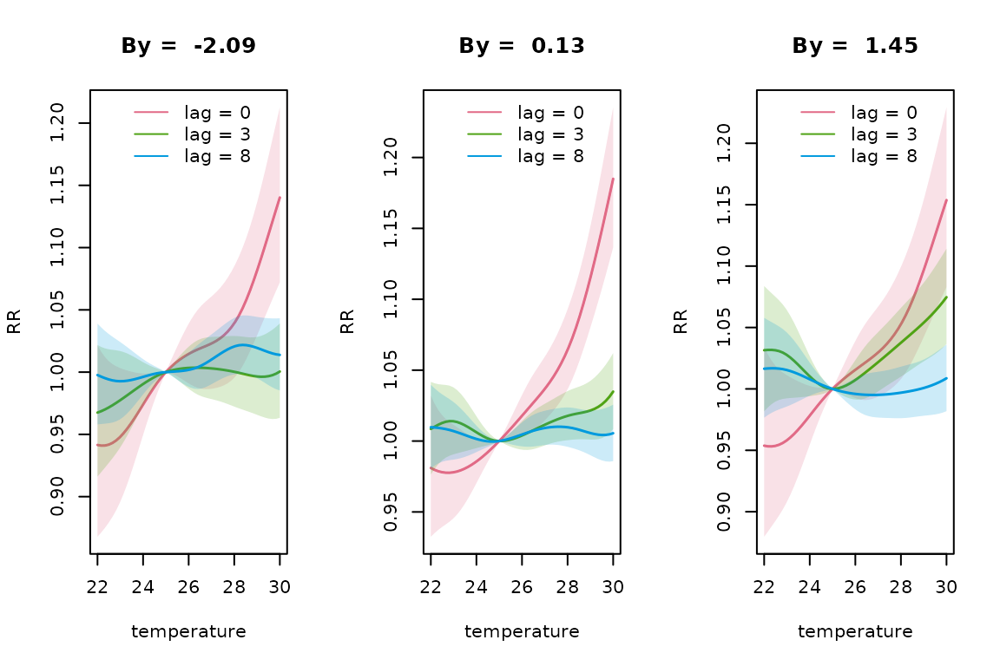
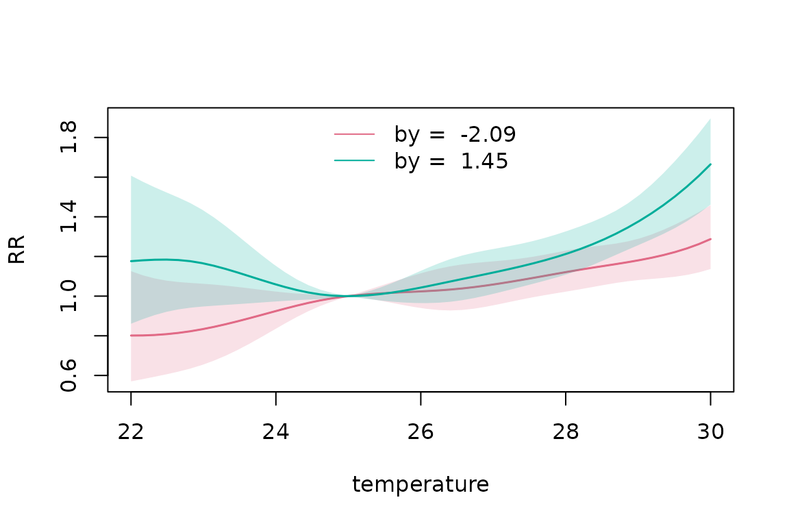
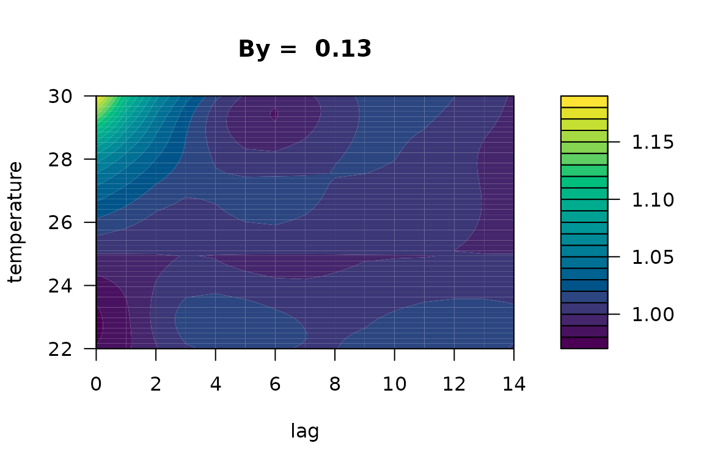
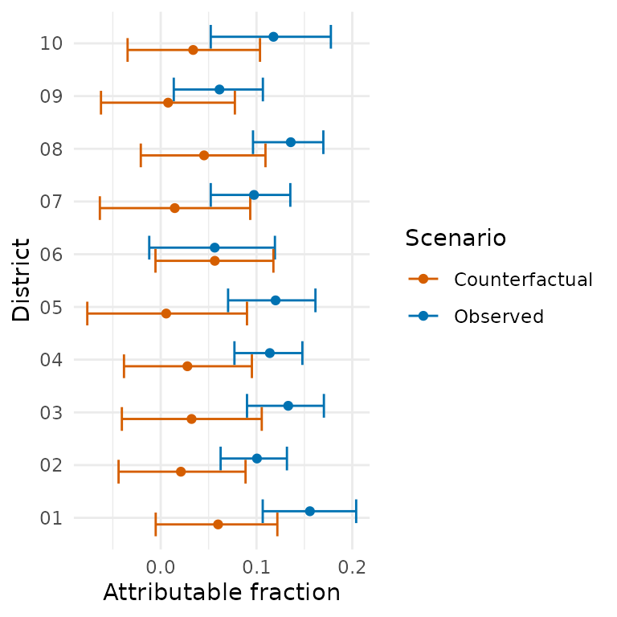

effect-modified-dlnms.RmdClassical distributed lag non-linear models (DLNMs) assume a common exposure-lag-response relationships across geographical areas. However, this relationship might be altered by an effect modifier that differs between spatial units. For example, the relationship between temperature and mortality may differ between regions according to the deprivation index.
dlnmLPS provides methods for fitting effect-modified
distributed lag non-linear models, allowing the exposure-lag-response
relationship to vary according to a continuous or categorical covariate
(Rutten et al. 2026). This framework
allows for flexible interactions between the DLNM and a possibly
non-linear smooth covariate.
In this vignette, we demonstrate how to fit covariate-varying DLNMs
using dlnmLPS and show how to predict and visualize the
exposure-lag-response relationship.
The basic functionality of dlnmLPSis introduced in
vignette("introduction_dlnmlps").
For illustration, we use the following simulated example data:
# Example data
data(barcelona_temp)This simulated data set contains daily minimum, maximum and mean temperature in all 10 districts of Barcelona during the summer period (1 June–30 September) between 2007 and 2011. The population size, deprivation index and daily number of deaths are included for every district. For this example, we will investigate how the effect of maximum temperature on mortality spatially varies according to the deprivation index. The outcome and exposure variable can then be inspected:
# Inspect the data
head(barcelona_temp)
#> date Tmax Tmin Tmean District pop depriv dtot
#> 1 2007-06-01 25.85997 17.93684 21.89841 01 659845.8 1.188957 26
#> 2 2007-06-02 25.71266 17.21590 21.46428 01 659845.8 1.188957 27
#> 3 2007-06-03 25.33624 16.95453 21.14538 01 659845.8 1.188957 23
#> 4 2007-06-04 25.47256 15.42090 20.44673 01 659845.8 1.188957 23
#> 5 2007-06-05 23.89031 16.21367 20.05199 01 659845.8 1.188957 26
#> 6 2007-06-06 24.08012 16.47465 20.27739 01 659845.8 1.188957 18We can extract some additional information from the date such as the day of the week, year and month.
The dlnmLPS package provides a lot of flexibility in
modelling effect modification. In this example, we will fit four
different models:
Categorical effect modification, a penalized DLNM modified by a categorical deprivation index;
Linear effect modification, a penalized DLNM modified by a continuous deprivation index, using a linear interaction;
Smooth unpenalized effect modification, a penalized DLNM modified by a continuous deprivation index, expressed by natural splines using 2 knots (on the 10% and 90% percentile);
Smooth penalized effect modification, a penalized DLNM modified by a continuous deprivation index, expressed by penalized splines using 5 df.
We include month as natural splines with 3 degrees of freedom, year as a random walk of order one, day of the week as a factor and District as an independent random effect. We use a penalized DLNM with 8 degrees of freedom and penalty of order 2.
For the first model, we split the deprivation index in a categorical
variable with three levels. We specify the modifying covariate through
the option by and include type=“factor” in the
argument arg.by. We also include the categorical
deprivation index as a main effect in the model. The model can be fitted
as:
# Fit a categorical modified DLNM
group <- factor(paste0(dataset$District, "-", dataset$year))
basis.max_pen <- dlnm::crossbasis(
dataset$Tmax,
argvar = list(fun = "ps", df = 8),
arglag = list(fun = "ps", df = 8),
lag = 14,
group = group
)
dataset$depriv_cat <- ifelse(dataset$depriv <= quantile(dataset$depriv,0.25), "low",
ifelse(dataset$depriv >= quantile(dataset$depriv,0.75), "high", "medium"))
model1 <- dlnmLPS(dtot ~ factor(dow) + factor(depriv_cat) +
sm(basis.max_pen, arg = list(pen = 2),
by = depriv_cat, arg.by = list(type = "factor")) +
sm(month, arg = list(type = "ns", df = 3)) +
sm(year, arg = list(type = "rw1")) +
sm(District, arg = list(type = "ind")),
data = dataset,
offset = log(pop),
model.comparison = list(DIC = TRUE, WAIC = TRUE, CPO = TRUE),
family = "Poisson")The second model can similarly be fitted by specifying
type=“linear” instead of type=“factor”.
Deprivation index is now also included as a linear main effect:
# Fit a linear modified DLNM
model2 <- dlnmLPS(dtot ~ factor(dow) + depriv +
sm(basis.max_pen, arg = list(pen = 2),
by = depriv, arg.by = list(type = "linear")) +
sm(month, arg = list(type = "ns", df = 3)) +
sm(year, arg = list(type = "rw1")) +
sm(District, arg = list(type = "ind")),
data = dataset,
offset = log(pop),
model.comparison = list(DIC = TRUE, WAIC = TRUE, CPO = TRUE),
family = "Poisson")For the third model, we include deprivation index as a smooth effect, using natural splines with two knots. The model can be fitted as:
# Fit an unpenalized smooth modified DLNM
knots_depriv <- quantile(dataset$depriv, probs = c(0.10,0.90))
model3 <- dlnmLPS(dtot ~ factor(dow) + sm(depriv, arg = list(type = "ns", knots = knots_depriv)) +
sm(basis.max_pen, arg = list(pen = 2),
by = depriv, arg.by = list(type = "ns", knots = knots_depriv)) +
sm(month, arg = list(type = "ns", df = 3)) +
sm(year, arg = list(type = "rw1")) +
sm(District, arg = list(type = "ind")),
data = dataset,
offset = log(pop),
model.comparison = list(DIC = TRUE, WAIC = TRUE, CPO = TRUE),
family = "Poisson")Lastly, in the fourth model, we include an interaction with deprivation index using penalized splines:
# Fit an penalized smooth modified DLNM
model4 <- dlnmLPS(dtot ~ factor(dow) + sm(depriv, arg = list(type = "ps", df = 5, pen = 2)) +
sm(basis.max_pen, arg = list(pen = 2),
by = depriv, arg.by = list(type = "ps", df = 5, pen = 2)) +
sm(month, arg = list(type = "ns", df = 3)) +
sm(year, arg = list(type = "rw1")) +
sm(District, arg = list(type = "ind")),
data = dataset,
offset = log(pop),
model.comparison = list(DIC = TRUE, WAIC = TRUE, CPO = TRUE),
family = "Poisson")We can compare the performance of the four models using model comparison criteria DIC, WAIC and CPO:
# Compare the estimated associations
model1$DIC; model1$WAIC; -sum(log(model1$CPO))
#> [1] 30410.81
#> [1] 30414.22
#> [1] 15207.02
model2$DIC; model2$WAIC; -sum(log(model2$CPO))
#> [1] 30390.85
#> [1] 30394.04
#> [1] 15196.9
model3$DIC; model3$WAIC; -sum(log(model3$CPO))
#> [1] 30388.94
#> [1] 30391.41
#> [1] 15195.6
model4$DIC; model4$WAIC; -sum(log(model4$CPO))
#> [1] 30379
#> [1] 30381.98
#> [1] 15190.91The fourth model is preferred based on all model selection criteria. Using this model, we predict the exposure-lag-response curve for three different levels of the deprivation index (2.5%, 50% and 97.5%) at temperatures between 22 and 30 degrees Celsius, relative to a centering value of 25 degrees. We also request the probability that the logarithm of the relative risk exceeds 0:
pred_penalized <- pred_crossbasis(
basis = basis.max_pen,
model = model4,
at_x = seq(22,30,length = 50),
cen = 25,
lag = c(0,14),
CI = TRUE,
by = round(quantile(dataset$depriv, probs = c(0.025,0.50,0.975)),2),
exc.prob = TRUE
)Using the extract_predictions() function, we can easily
extract (part of) the requested predictions. For example, if interest is
in the lag-specific RR for lag 0 and lag 2 at 22 and 30 degrees and for
deprivation quantiles 2.5% and 97.5%, we can use:
extract_predictions(pred_penalized, slice_x = c(22,30), slice_lag = c(0,2),
slice_by = round(quantile(dataset$depriv, probs = c(0.025,0.975)),2),
ptype = "matRRfit")
#> x lag fit lower upper exc.prob by
#> 1 22 0 0.9415039 0.8677953 1.021473 0.07364462 -2.09
#> 2 30 0 1.1402326 1.0721071 1.212687 0.99998511 -2.09
#> 3 22 2 0.9528834 0.9024280 1.006160 0.04104123 -2.09
#> 4 30 2 1.0198359 0.9848947 1.056017 0.86526035 -2.09
#> 5 22 0 0.9537818 0.8796288 1.034186 0.12591050 1.45
#> 6 30 0 1.1537344 1.0828119 1.229302 0.99999502 1.45
#> 7 22 2 1.0071232 0.9591593 1.057486 0.61221631 1.45
#> 8 30 2 1.0870012 1.0501871 1.125106 0.99999896 1.45To plot the exposure-response relationship at lag 0, 3 and 8 for the 2.5%, 50% and 97.5% percentile deprivation indices, we can use:
plot(pred_penalized, slice_lag = c(0,3,8), ptype = "slices", CI = TRUE,
xlab = "temperature", ylab = "RR")
Based on this plot, the differences in temporal evolution of the RR,
based on deprivation index, seem to be small. The plot title indicates
the level of deprivation. The option multiple.plots = FALSE
allows visualizing the results for different levels of the deprivation
index on one plot. Note that this option is only available for an
integer (and not a vector) slice value or overall RR-curve. Furthermore,
the option slice_by allows to specify only a subset of the
predicted by-values. For example, if we only want to plot
the 2.5% and 97.5% deprivation percentiles, we can use:
plot(pred_penalized, slice_x = 30,
slice_by = round(quantile(dataset$depriv,probs = c(0.025,0.975)),2),
ptype = "slices", CI = TRUE, xlab = "lag", ylab = "RR", multiple.plots = FALSE)
plot(pred_penalized, slice_by = round(quantile(dataset$depriv, probs = c(0.025,0.975)),2),
ptype = "overall", CI = TRUE, xlab = "temperature", ylab = "RR",
multiple.plots = FALSE)
At high temperatures, there is some evidence that the overall RR is lower for municipalities with a low deprivation index. A contour plot of the exposure-lag-response relationship can also be made for different deprivation levels:
contour(pred_penalized, ptype = "cross", xlab = "lag", ylab = "temperature")
We could also calculate the attributable fraction in 2007 for example. Using the district-specific maximum temperatures, deprivation index and deaths, and the backward perspective, we get:
# Calculate exposure and outcome timeseries
data2007_district <- dataset |>
dplyr::filter(year == 2007)
# Calculate attributable risk
af2007_district <- attributable_risk(
basis = basis.max_pen,
cases = data2007_district$dtot,
model = model4,
cen = 25,
x = data2007_district$Tmax,
by = data2007_district$depriv,
group = data2007_district$District,
dir = "back",
tot = TRUE,
samples = TRUE)We could for example also calculate a counterfactual attributable fraction, in which the deprivation index in every area is equal to the 2.5% deprivation percentile.
# Calculate counterfactual attributable risk
depriv_lower <- round(quantile(data2007_district$depriv, probs = 0.025, na.rm = TRUE),2)
af2007_counter <- attributable_risk(
basis = basis.max_pen,
cases = data2007_district$dtot,
model = model4,
cen = 25,
x = data2007_district$Tmax,
by = rep(depriv_lower, length(data2007_district$depriv)),
group = data2007_district$District,
dir = "back",
tot = TRUE,
samples = TRUE)Both results could be visualized as:
# Extract results
af_ci <- dplyr::bind_rows(lapply(seq_along(af2007_district$samples), function(i) {
x <- af2007_district$samples[[i]]
data.frame(
ID = x$ID[1],
estimate = af2007_district$fit[[i]]$af,
lower = quantile(x$af, 0.025, na.rm = TRUE),
upper = quantile(x$af, 0.975, na.rm = TRUE)
)
}))
counter_ci <- dplyr::bind_rows(lapply(seq_along(af2007_counter$samples), function(i) {
x <- af2007_counter$samples[[i]]
data.frame(
ID = x$ID[1],
estimate = af2007_counter$fit[[i]]$af,
lower = quantile(x$af, 0.025, na.rm = TRUE),
upper = quantile(x$af, 0.975, na.rm = TRUE)
)
}))
af_plot_df <- dplyr::bind_rows(
dplyr::mutate(af_ci, scenario = "Observed"),
dplyr::mutate(counter_ci, scenario = "Counterfactual")
)
# Visualize results
ggplot2::ggplot(af_plot_df, ggplot2::aes(x = estimate, y = ID, colour = scenario)) +
ggplot2::geom_errorbar(ggplot2::aes(xmin = lower, xmax = upper), orientation = "y",
position = ggplot2::position_dodge(0.5)) +
ggplot2::geom_point(position = ggplot2::position_dodge(0.5)) +
ggplot2::scale_colour_manual(values = c("Observed" = "#0072B2","Counterfactual" = "#D55E00")) +
ggplot2::labs(x = "Attributable fraction", y = "District",colour = "Scenario") +
ggplot2::theme_minimal()
It can be seen that a lower deprivation index, would result in a lower attributable fraction for some districts.
In this vignette, we introduced the effect modifying functionality of
dlnmLPS. We demonstrated how to fit four different models,
differing in the flexibility of the effect modification. We used
penalized splines to showcase the functionality of the package but
similar models can be fitted with unpenalized splines. See also
vignette("introduction_dlnmlps") for more information.